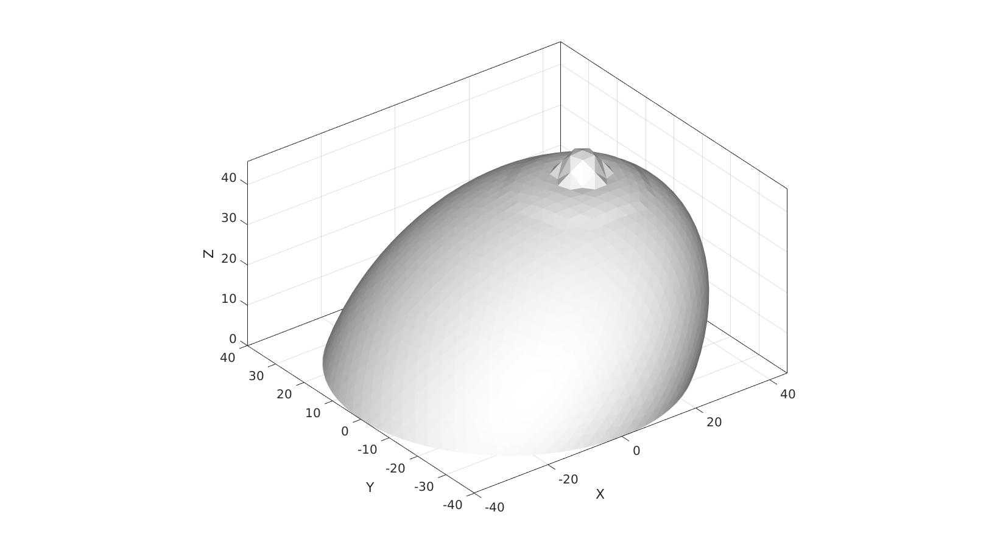
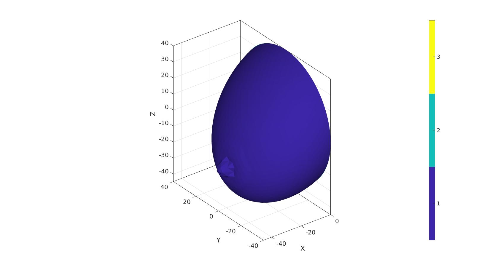
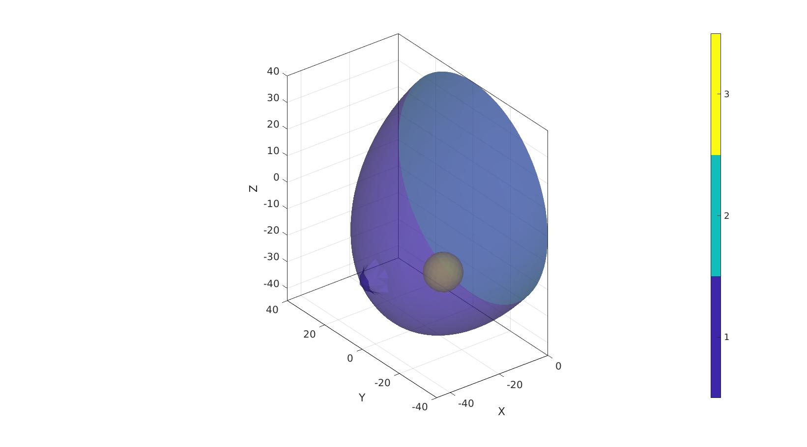
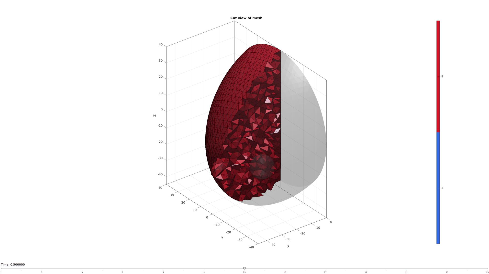
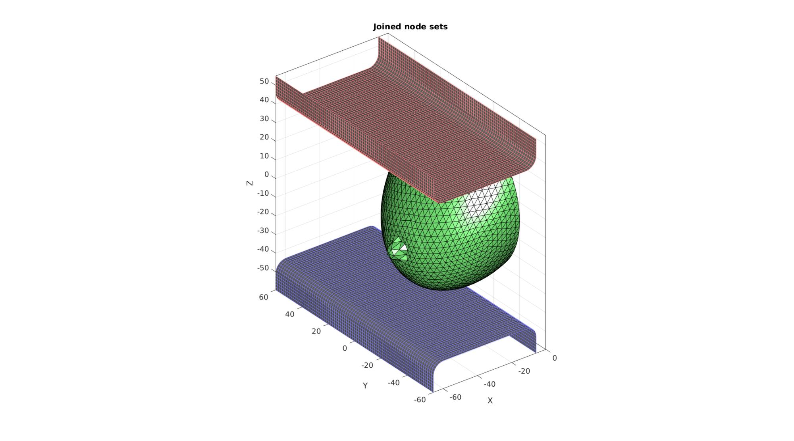
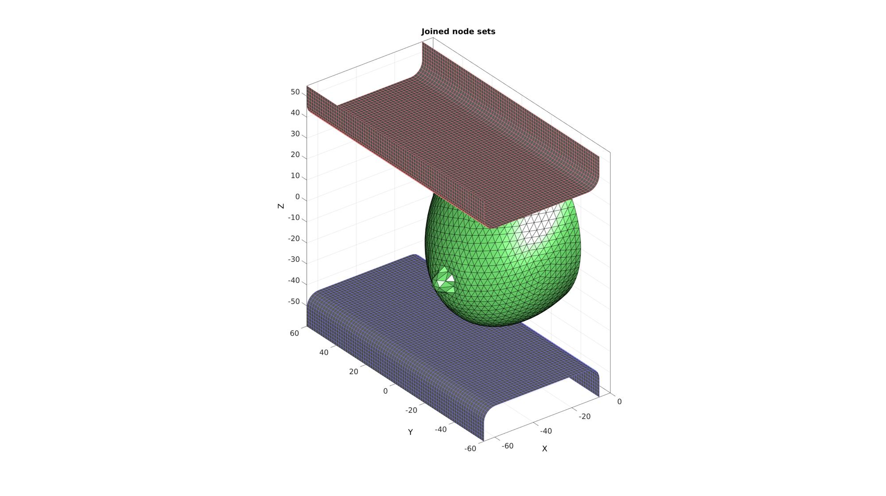
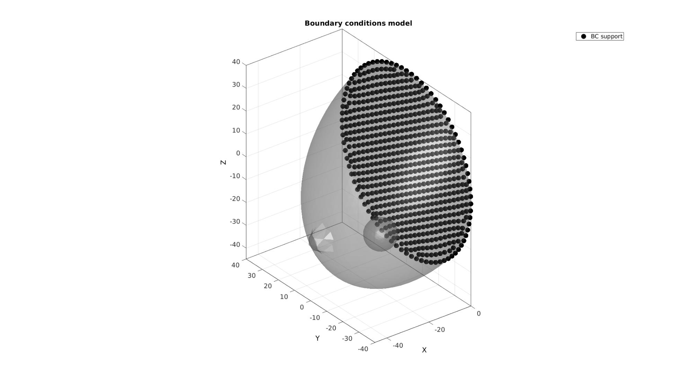
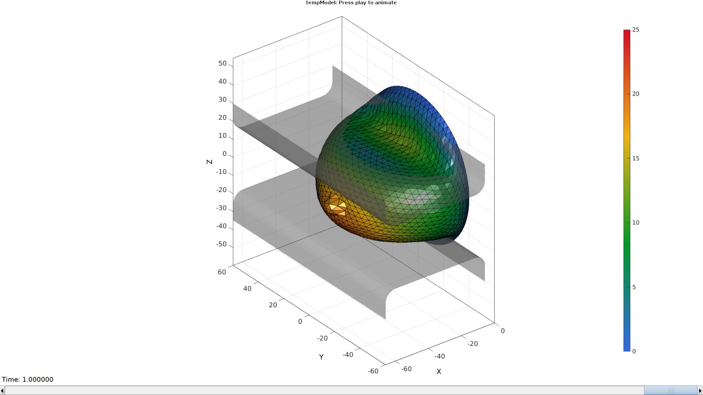

DEMO_febio_0044_mammography_01.m
Below is a demonstration for:
- Building geometry for a slab with hexahedral elements, and a triangulated sphere.
- Defining the boundary conditions
- Coding the febio structure
- Running the model
- Importing and visualizing the displacement results
Contents
- Keywords
- Plot settings
- Control parameters
- Create hemi-sphere
- Change shape of hemi-sphere to create basic breast model
- Rotate model
- Get interior points
- Visualizing mesh using meshView, see also anim8
- Split element sets
- Building plate models
- Joining node sets
- Define contact surfaces
- Define boundary conditions
- Defining the FEBio input structure
- Quick viewing of the FEBio input file structure
- Exporting the FEBio input file
- Running the FEBio analysis
- Import FEBio results
Keywords
- febio_spec version 3.0
- febio, FEBio
- indentation
- contact, sliding, sticky, friction
- rigid body constraints
- tetrahedral elements, tet8
- triangular elements, tri3
- static, solid
- hyperelastic, Ogden
- displacement logfile
- stress logfile
clear; close all; clc;
Plot settings
fontSize=15; faceAlpha1=0.8; faceAlpha2=0.3; markerSize=40; lineWidth=3;
Control parameters
% Path names defaultFolder = fileparts(fileparts(mfilename('fullpath'))); savePath=fullfile(defaultFolder,'data','temp'); % Defining file names febioFebFileNamePart='tempModel'; febioFebFileName=fullfile(savePath,[febioFebFileNamePart,'.feb']); %FEB file name febioLogFileName=[febioFebFileNamePart,'.txt']; %FEBio log file name febioLogFileName_disp=[febioFebFileNamePart,'_disp_out.txt']; %Log file name for exporting displacement febioLogFileName_force=[febioFebFileNamePart,'_force_out.txt']; %Log file name for exporting force %Breast geometry r=40; %Breast radius r1=r/2.5; r2=r/7; rm=mean([r1 r2]); w=(r1-r2)/20; h=r2; dx=r/2; %Gravity direction shape alteration factor nRefine=3; %Number of refine steps for hemi-sphere plateDisplacement=25; volumeFactor=3; loadAngle=(0/180)*pi; %Material parameter set c1_1=1e-3; %Shear-modulus-like parameter m1_1=6; %Material parameter setting degree of non-linearity k_factor=1e2; %Bulk modulus factor k_1=c1_1*k_factor; %Bulk modulus c1_2=5e-3; %Shear-modulus-like parameter m1_2=2; %Material parameter setting degree of non-linearity k_factor=1e2; %Bulk modulus factor k_2=c1_2*k_factor; %Bulk modulus % FEA control settings numTimeSteps=10; %Number of time steps desired max_refs=25; %Max reforms max_ups=0; %Set to zero to use full-Newton iterations opt_iter=10; %Optimum number of iterations max_retries=5; %Maximum number of retires dtmin=(1/numTimeSteps)/100; %Minimum time step size dtmax=1/numTimeSteps; %Maximum time step size symmetric_stiffness=0; min_residual=1e-20; %Contact parameters contactInitialOffset=0.1; contactPenalty=10; laugon=0; minaug=1; maxaug=10; fric_coeff=0.1;
Create hemi-sphere
[F,V,C_hemiSphereLabel]=hemiSphereMesh(nRefine,r,1); %Construct hemi-shere mesh pointSpacing=mean(patchEdgeLengths(F,V)); % Get point spacing from mesh % %% % % Visualize hemi-sphere % cFigure; hold on; % gpatch(F,V,C_hemiSphereLabel); % axisGeom; % camlight headlight; % icolorbar; % gdrawnow;
Change shape of hemi-sphere to create basic breast model
indExclude=unique(F(C_hemiSphereLabel==2,:)); logicExclude=false(size(V,1),1); logicExclude(indExclude)=1; dt=sqrt(sum(V(:,[1 2]).^2,2)); logicHigh1=dt<r1 & ~logicExclude; logicHigh2=dt<r2 & ~logicExclude; C_skin=double(logicHigh1); C_skin(logicHigh2)=2; t=linspace(0,2*pi,500); x=rm*sin(t); y=rm*cos(t); vc=[x(:) y(:)]; [d]=minDist(V(C_skin==1,[1 2]),vc); dtt=d.^3; dtt=dtt-min(dtt); dtt=dtt./max(dtt); dtt=abs(dtt-1)*w; V(C_skin==1,3)=V(C_skin==1,3)+dtt; f=V(:,3); f=f-min(f(:)); f=f./max(f(:)); V(:,1)=V(:,1)+dx.*f; dtt=dt(C_skin==2).^3; dtt=dtt-min(dtt); dtt=dtt./max(dtt); dtt=abs(dtt-1)*h; V(C_skin==2,3)=V(C_skin==2,3)+dtt;
Rotate model
R=euler2DCM([pi -0.5*pi 0]); V=V*R;
[Fs,Vs]=geoSphere(2,r/6); Vs(:,1)=Vs(:,1)-r/2; Vs(:,2)=Vs(:,2)-r/4; Vs(:,3)=Vs(:,3)-r/2;
C=[C_hemiSphereLabel;(max(C_hemiSphereLabel(:))+1)*ones(size(Fs,1),1)]; F=[F;Fs+size(V,1)]; V=[V;Vs]; cFigure; hold on; gpatch(F,V,C,'none',0.5); axisGeom; camlight headlight; icolorbar; gdrawnow;
Get interior points
[V_in1]=getInnerPoint({F,Fs},{V,Vs});
[V_in2]=getInnerPoint(Fs,Vs);
V_regions=[V_in1; V_in2];
cFigure; hold on;
gpatch(F,V,C,'none',0.5);
% gpatch(Fs,Vs,'kw','none',1);
plotV(V_regions,'k.','markerSize',50);
axisGeom;
camlight headlight;
gdrawnow;
 faceBoundaryMarker=C; [regionA]=tetVolMeanEst(F,V); %Volume for regular tets inputStruct.stringOpt='-pq1.2AaY'; inputStruct.Faces=fliplr(F); inputStruct.Nodes=V; inputStruct.holePoints=[]; inputStruct.faceBoundaryMarker=faceBoundaryMarker; %Face boundary markers inputStruct.regionPoints=V_regions; %region points inputStruct.regionA=regionA*ones(size(V_regions,1),1)*volumeFactor; inputStruct.minRegionMarker=2; %Minimum region marker % Mesh model using tetrahedral elements using tetGen [meshOutput]=runTetGen(inputStruct); %Run tetGen % Access model element and patch data Fb=meshOutput.facesBoundary; Cb=meshOutput.boundaryMarker; V=meshOutput.nodes; CE=meshOutput.elementMaterialID; E=meshOutput.elements;
%%%%%%%%%%%%%%%%%%%%%%%%%%%%%%%%%%%%%%%%%%%%% --- TETGEN Tetrahedral meshing --- 18-Dec-2020 14:45:30 %%%%%%%%%%%%%%%%%%%%%%%%%%%%%%%%%%%%%%%%%%%%% --- Writing SMESH file --- 18-Dec-2020 14:45:30 ----> Adding node field ----> Adding facet field ----> Adding holes specification ----> Adding region specification --- Done --- 18-Dec-2020 14:45:30 --- Running TetGen to mesh input boundary--- 18-Dec-2020 14:45:30 Opening /mnt/data/MATLAB/GIBBON/data/temp/temp.smesh. Delaunizing vertices... Delaunay seconds: 0.031397 Creating surface mesh ... Surface mesh seconds: 0.003984 Recovering boundaries... Boundary recovery seconds: 0.005729 Removing exterior tetrahedra ... Spreading region attributes. Exterior tets removal seconds: 0.00236 Recovering Delaunayness... Delaunay recovery seconds: 0.011395 Refining mesh... Refinement seconds: 0.069616 Optimizing mesh... Optimization seconds: 0.004905 Writing /mnt/data/MATLAB/GIBBON/data/temp/temp.1.node. Writing /mnt/data/MATLAB/GIBBON/data/temp/temp.1.ele. Writing /mnt/data/MATLAB/GIBBON/data/temp/temp.1.face. Writing /mnt/data/MATLAB/GIBBON/data/temp/temp.1.edge. Output seconds: 0.062839 Total running seconds: 0.192485 Statistics: Input points: 2051 Input facets: 4094 Input segments: 6141 Input holes: 0 Input regions: 2 Mesh points: 5299 Mesh tetrahedra: 27401 Mesh faces: 56689 Mesh faces on exterior boundary: 3774 Mesh faces on input facets: 4094 Mesh edges on input segments: 6141 Steiner points inside domain: 3248 --- Done --- 18-Dec-2020 14:45:30 %%%%%%%%%%%%%%%%%%%%%%%%%%%%%%%%%%%%%%%%%%%%% --- Importing TetGen files --- 18-Dec-2020 14:45:30 --- Done --- 18-Dec-2020 14:45:30
Q=euler2DCM([loadAngle 0 0]); V=V*Q;
cFigure; hold on; hp=gpatch(Fb,V,Cb,'none',0.5); axisGeom; camlight headlight; icolorbar; gdrawnow;

Visualizing mesh using meshView, see also anim8
meshView(meshOutput);
Split element sets
E1=E(meshOutput.elementMaterialID==-2,:); E2=E(meshOutput.elementMaterialID==-3,:);
Building plate models
%Basic side curve of plate Vt=[0 0 0; 0 0 15; 1.5*r 0 15; 1.5*r 0 0; ]; %Fillet side curve of plate rFillet=6; %Fillet radius np=25; %Number of points used to construct each fillet edge closedLoopOption=0; %Use 1 if curve represents a closed loop but containes unique points [Vc]=filletCurve(Vt,rFillet,np,closedLoopOption); %Extrude to form plate cPar.pointSpacing=pointSpacing/2; cPar.depth=3*r; cPar.patchType='quad'; cPar.dir=0; cPar.closeLoopOpt=0; [Fp1,Vp1]=polyExtrude(Vc,cPar); Fp1=fliplr(Fp1); Vp1(:,3)=Vp1(:,3)-max(Vp1(:,3))+min(V(:,3)); Vp1(:,1)=Vp1(:,1)-max(Vp1(:,1))-r/7; %Copy to create second plate Fp2=fliplr(Fp1); Vp2=Vp1; Vp2(:,3)=-Vp2(:,3); Vp2(:,3)=Vp2(:,3)-min(Vp2(:,3))+max(V(:,3)); cFigure; hold on; gpatch(Fb,V,'gw','k',1); gpatch(Fp1,Vp1,'kw','bw',1); gpatch(Fp2,Vp2,'kw','rw',1); axisGeom; camlight headlight; gdrawnow;
Joining node sets
Fp1=Fp1+size(V,1); %Fixed element indices Fp2=Fp2+size(V,1)+size(Vp1,1); %Fixed element indices V=[V;Vp1;Vp2;]; %Combined node sets V=V*Q'; loadDir=[0 0 1]*Q'; plateDisplacement_XYZ=plateDisplacement.*loadDir;
Plotting joined geometry
cFigure; title('Joined node sets','FontSize',fontSize); xlabel('X','FontSize',fontSize); ylabel('Y','FontSize',fontSize); zlabel('Z','FontSize',fontSize); hold on; gpatch(Fb,V,'gw','k',1); gpatch(Fp1,V,'kw','bw',1); gpatch(Fp2,V,'kw','rw',1); axisGeom; camlight headlight; gdrawnow;
Define contact surfaces
% The rigid primary surface of the sphere F_contact_primary1=Fp1; F_contact_primary2=Fp2; % The deformable secondary surface of the slab logicContactSurf1=Cb==1; F_contact_secondary=fliplr(Fb(logicContactSurf1,:)); % Plotting surface models cFigure; hold on; title('Contact sets and normal directions','FontSize',fontSize); gpatch(Fb,V,'kw','none',faceAlpha2); hl(1)=gpatch(F_contact_primary1,V,'gw','k',1); patchNormPlot(F_contact_primary1,V); hl(2)=gpatch(F_contact_primary2,V,'rw','k',1); patchNormPlot(F_contact_primary2,V); hl(3)=gpatch(F_contact_secondary,V,'bw','k',1); patchNormPlot(F_contact_secondary,V); legend(hl,{'Master 1','Master 2','Slave'}); axisGeom(gca,fontSize); camlight headlight; gdrawnow;
Define boundary conditions
%Supported nodes
logicRigid=Cb==2;
Fr=Fb(logicRigid,:);
bcSupportList=unique(Fr(:));
Visualize BC's
hf=cFigure; title('Boundary conditions model','FontSize',fontSize); xlabel('X','FontSize',fontSize); ylabel('Y','FontSize',fontSize); zlabel('Z','FontSize',fontSize); hold on; gpatch(Fb,V,'kw','none',faceAlpha2); hl2(1)=plotV(V(bcSupportList,:),'k.','MarkerSize',markerSize); legend(hl2,{'BC support'}); axisGeom(gca,fontSize); camlight headlight; gdrawnow;
Defining the FEBio input structure
See also febioStructTemplate and febioStruct2xml and the FEBio user manual.
%Get a template with default settings [febio_spec]=febioStructTemplate; %febio_spec version febio_spec.ATTR.version='3.0'; %Module section febio_spec.Module.ATTR.type='solid'; %Control section febio_spec.Control.analysis='STATIC'; febio_spec.Control.time_steps=numTimeSteps; febio_spec.Control.step_size=1/numTimeSteps; febio_spec.Control.solver.max_refs=max_refs; febio_spec.Control.solver.max_ups=max_ups; febio_spec.Control.time_stepper.dtmin=dtmin; febio_spec.Control.time_stepper.dtmax=dtmax; febio_spec.Control.time_stepper.max_retries=max_retries; febio_spec.Control.time_stepper.opt_iter=opt_iter; %Material section materialName1='Material1'; febio_spec.Material.material{1}.ATTR.name=materialName1; febio_spec.Material.material{1}.ATTR.type='Ogden'; febio_spec.Material.material{1}.ATTR.id=1; febio_spec.Material.material{1}.c1=c1_1; febio_spec.Material.material{1}.m1=m1_1; febio_spec.Material.material{1}.c2=c1_1; febio_spec.Material.material{1}.m2=-m1_1; febio_spec.Material.material{1}.k=k_1; materialName2='Material2'; febio_spec.Material.material{2}.ATTR.name=materialName2; febio_spec.Material.material{2}.ATTR.type='Ogden'; febio_spec.Material.material{2}.ATTR.id=2; febio_spec.Material.material{2}.c1=c1_2; febio_spec.Material.material{2}.m1=m1_2; febio_spec.Material.material{2}.c2=c1_2; febio_spec.Material.material{2}.m2=-m1_2; febio_spec.Material.material{2}.k=k_2; materialName3='Material3'; febio_spec.Material.material{3}.ATTR.name=materialName3; febio_spec.Material.material{3}.ATTR.type='rigid body'; febio_spec.Material.material{3}.ATTR.id=3; febio_spec.Material.material{3}.density=1; febio_spec.Material.material{3}.center_of_mass=mean(Vp1,1); materialName4='Material4'; febio_spec.Material.material{4}.ATTR.name=materialName4; febio_spec.Material.material{4}.ATTR.type='rigid body'; febio_spec.Material.material{4}.ATTR.id=4; febio_spec.Material.material{4}.density=1; febio_spec.Material.material{4}.center_of_mass=mean(Vp2,1); % Mesh section % -> Nodes febio_spec.Mesh.Nodes{1}.ATTR.name='All'; %The node set name febio_spec.Mesh.Nodes{1}.node.ATTR.id=(1:size(V,1))'; %The node id's febio_spec.Mesh.Nodes{1}.node.VAL=V; %The nodel coordinates % -> Elements partName1='Part1_breast_normal'; febio_spec.Mesh.Elements{1}.ATTR.name=partName1; %Name of this part febio_spec.Mesh.Elements{1}.ATTR.type='tet4'; %Element type febio_spec.Mesh.Elements{1}.elem.ATTR.id=(1:1:size(E1,1))'; %Element id's febio_spec.Mesh.Elements{1}.elem.VAL=E1; %The element matrix partName2='Part2_tumor'; febio_spec.Mesh.Elements{2}.ATTR.name=partName2; %Name of this part febio_spec.Mesh.Elements{2}.ATTR.type='tet4'; %Element type febio_spec.Mesh.Elements{2}.elem.ATTR.id=size(E1,1)+(1:1:size(E2,1))'; %Element id's febio_spec.Mesh.Elements{2}.elem.VAL=E2; %The element matrix partName3='Part3_plate1'; febio_spec.Mesh.Elements{3}.ATTR.name=partName3; %Name of this part febio_spec.Mesh.Elements{3}.ATTR.type='quad4'; %Element type febio_spec.Mesh.Elements{3}.elem.ATTR.id=size(E1,1)+size(E2,1)+(1:1:size(Fp1,1))'; %Element id's febio_spec.Mesh.Elements{3}.elem.VAL=Fp1; %The element matrix partName4='Part4_plate2'; febio_spec.Mesh.Elements{4}.ATTR.name=partName4; %Name of this part febio_spec.Mesh.Elements{4}.ATTR.type='quad4'; %Element type febio_spec.Mesh.Elements{4}.elem.ATTR.id=size(E1,1)+size(E2,1)+size(Fp1,1)+(1:1:size(Fp2,1))'; %Element id's febio_spec.Mesh.Elements{4}.elem.VAL=Fp2; %The element matrix %MeshDomains section febio_spec.MeshDomains.SolidDomain{1}.ATTR.name=partName1; febio_spec.MeshDomains.SolidDomain{1}.ATTR.mat=materialName1; febio_spec.MeshDomains.SolidDomain{2}.ATTR.name=partName2; febio_spec.MeshDomains.SolidDomain{2}.ATTR.mat=materialName2; febio_spec.MeshDomains.ShellDomain{1}.ATTR.name=partName3; febio_spec.MeshDomains.ShellDomain{1}.ATTR.mat=materialName3; febio_spec.MeshDomains.ShellDomain{2}.ATTR.name=partName4; febio_spec.MeshDomains.ShellDomain{2}.ATTR.mat=materialName4; % -> NodeSets nodeSetName1='bcSupportList'; febio_spec.Mesh.NodeSet{1}.ATTR.name=nodeSetName1; febio_spec.Mesh.NodeSet{1}.node.ATTR.id=bcSupportList(:); % -> Surfaces surfaceName1='contactSurface1'; febio_spec.Mesh.Surface{1}.ATTR.name=surfaceName1; febio_spec.Mesh.Surface{1}.quad4.ATTR.id=(1:1:size(F_contact_primary1,1))'; febio_spec.Mesh.Surface{1}.quad4.VAL=F_contact_primary1; surfaceName2='contactSurface2'; febio_spec.Mesh.Surface{2}.ATTR.name=surfaceName2; febio_spec.Mesh.Surface{2}.quad4.ATTR.id=(1:1:size(F_contact_primary2,1))'; febio_spec.Mesh.Surface{2}.quad4.VAL=F_contact_primary2; surfaceName3='contactSurface3'; febio_spec.Mesh.Surface{3}.ATTR.name=surfaceName3; febio_spec.Mesh.Surface{3}.tri3.ATTR.id=(1:1:size(F_contact_secondary,1))'; febio_spec.Mesh.Surface{3}.tri3.VAL=F_contact_secondary; % -> Surface pairs febio_spec.Mesh.SurfacePair{1}.ATTR.name='Contact1'; febio_spec.Mesh.SurfacePair{1}.primary=surfaceName1; febio_spec.Mesh.SurfacePair{1}.secondary=surfaceName3; febio_spec.Mesh.SurfacePair{2}.ATTR.name='Contact2'; febio_spec.Mesh.SurfacePair{2}.primary=surfaceName2; febio_spec.Mesh.SurfacePair{2}.secondary=surfaceName3; %Boundary condition section % -> Fix boundary conditions febio_spec.Boundary.bc{1}.ATTR.type='fix'; febio_spec.Boundary.bc{1}.ATTR.node_set=nodeSetName1; febio_spec.Boundary.bc{1}.dofs='x,y,z'; %Rigid section % -> Prescribed rigid body boundary conditions febio_spec.Rigid.rigid_constraint{1}.ATTR.name='RotFix_1'; febio_spec.Rigid.rigid_constraint{1}.ATTR.type='fix'; febio_spec.Rigid.rigid_constraint{1}.rb=3; febio_spec.Rigid.rigid_constraint{1}.dofs='Ru,Rv,Rw'; febio_spec.Rigid.rigid_constraint{2}.ATTR.name='TranslationPrescribe_1_x'; febio_spec.Rigid.rigid_constraint{2}.ATTR.type='prescribe'; febio_spec.Rigid.rigid_constraint{2}.rb=3; febio_spec.Rigid.rigid_constraint{2}.dof='Rx'; febio_spec.Rigid.rigid_constraint{2}.value.ATTR.lc=1; febio_spec.Rigid.rigid_constraint{2}.value.VAL=plateDisplacement_XYZ(1); febio_spec.Rigid.rigid_constraint{3}.ATTR.name='TranslationPrescribe_1_y'; febio_spec.Rigid.rigid_constraint{3}.ATTR.type='prescribe'; febio_spec.Rigid.rigid_constraint{3}.rb=3; febio_spec.Rigid.rigid_constraint{3}.dof='Ry'; febio_spec.Rigid.rigid_constraint{3}.value.ATTR.lc=1; febio_spec.Rigid.rigid_constraint{3}.value.VAL=plateDisplacement_XYZ(2); febio_spec.Rigid.rigid_constraint{4}.ATTR.name='TranslationPrescribe_1_z'; febio_spec.Rigid.rigid_constraint{4}.ATTR.type='prescribe'; febio_spec.Rigid.rigid_constraint{4}.rb=3; febio_spec.Rigid.rigid_constraint{4}.dof='Rz'; febio_spec.Rigid.rigid_constraint{4}.value.ATTR.lc=1; febio_spec.Rigid.rigid_constraint{4}.value.VAL=plateDisplacement_XYZ(3); febio_spec.Rigid.rigid_constraint{5}.ATTR.name='RotFix_2'; febio_spec.Rigid.rigid_constraint{5}.ATTR.type='fix'; febio_spec.Rigid.rigid_constraint{5}.rb=4; febio_spec.Rigid.rigid_constraint{5}.dofs='Ru,Rv,Rw'; febio_spec.Rigid.rigid_constraint{6}.ATTR.name='TranslationPrescribe_2_x'; febio_spec.Rigid.rigid_constraint{6}.ATTR.type='prescribe'; febio_spec.Rigid.rigid_constraint{6}.rb=4; febio_spec.Rigid.rigid_constraint{6}.dof='Rx'; febio_spec.Rigid.rigid_constraint{6}.value.ATTR.lc=1; febio_spec.Rigid.rigid_constraint{6}.value.VAL=-plateDisplacement_XYZ(1); febio_spec.Rigid.rigid_constraint{7}.ATTR.name='TranslationPrescribe_2_y'; febio_spec.Rigid.rigid_constraint{7}.ATTR.type='prescribe'; febio_spec.Rigid.rigid_constraint{7}.rb=4; febio_spec.Rigid.rigid_constraint{7}.dof='Ry'; febio_spec.Rigid.rigid_constraint{7}.value.ATTR.lc=1; febio_spec.Rigid.rigid_constraint{7}.value.VAL=-plateDisplacement_XYZ(2); febio_spec.Rigid.rigid_constraint{8}.ATTR.name='TranslationPrescribe_2_z'; febio_spec.Rigid.rigid_constraint{8}.ATTR.type='prescribe'; febio_spec.Rigid.rigid_constraint{8}.rb=4; febio_spec.Rigid.rigid_constraint{8}.dof='Rz'; febio_spec.Rigid.rigid_constraint{8}.value.ATTR.lc=1; febio_spec.Rigid.rigid_constraint{8}.value.VAL=-plateDisplacement_XYZ(3); %Contact section for q=1:1:2 febio_spec.Contact.contact{q}.ATTR.type='sliding-elastic'; febio_spec.Contact.contact{q}.ATTR.surface_pair=febio_spec.Mesh.SurfacePair{q}.ATTR.name; febio_spec.Contact.contact{q}.two_pass=1; febio_spec.Contact.contact{q}.laugon=laugon; febio_spec.Contact.contact{q}.tolerance=0.2; febio_spec.Contact.contact{q}.gaptol=0; febio_spec.Contact.contact{q}.minaug=minaug; febio_spec.Contact.contact{q}.maxaug=maxaug; febio_spec.Contact.contact{q}.search_tol=0.01; febio_spec.Contact.contact{q}.search_radius=0.1; febio_spec.Contact.contact{q}.symmetric_stiffness=0; febio_spec.Contact.contact{q}.auto_penalty=1; febio_spec.Contact.contact{q}.penalty=contactPenalty; febio_spec.Contact.contact{q}.fric_coeff=fric_coeff; end %LoadData section % -> load_controller febio_spec.LoadData.load_controller{1}.ATTR.id=1; febio_spec.LoadData.load_controller{1}.ATTR.type='loadcurve'; febio_spec.LoadData.load_controller{1}.interpolate='LINEAR'; febio_spec.LoadData.load_controller{1}.points.point.VAL=[0 0; 1 1]; %Output section % -> log file febio_spec.Output.logfile.ATTR.file=febioLogFileName; febio_spec.Output.logfile.node_data{1}.ATTR.file=febioLogFileName_disp; febio_spec.Output.logfile.node_data{1}.ATTR.data='ux;uy;uz'; febio_spec.Output.logfile.node_data{1}.ATTR.delim=','; febio_spec.Output.logfile.node_data{2}.ATTR.file=febioLogFileName_force; febio_spec.Output.logfile.node_data{2}.ATTR.data='Rx;Ry;Rz'; febio_spec.Output.logfile.node_data{2}.ATTR.delim=',';
Quick viewing of the FEBio input file structure
The febView function can be used to view the xml structure in a MATLAB figure window.
febView(febio_spec); %Viewing the febio file
Exporting the FEBio input file
Exporting the febio_spec structure to an FEBio input file is done using the febioStruct2xml function.
febioStruct2xml(febio_spec,febioFebFileName); %Exporting to file and domNode
Running the FEBio analysis
To run the analysis defined by the created FEBio input file the runMonitorFEBio function is used. The input for this function is a structure defining job settings e.g. the FEBio input file name. The optional output runFlag informs the user if the analysis was run succesfully.
febioAnalysis.run_filename=febioFebFileName; %The input file name febioAnalysis.run_logname=febioLogFileName; %The name for the log file febioAnalysis.disp_on=1; %Display information on the command window febioAnalysis.runMode='external';%'internal'; [runFlag]=runMonitorFEBio(febioAnalysis);%START FEBio NOW!!!!!!!!
%%%%%%%%%%%%%%%%%%%%%%%%%%%%%%%%%%%%%%%%%%%%%%%%%%%%%%%%%%%%%%%%%%%%%%%%%%%
--------> RUNNING/MONITORING FEBIO JOB <-------- 18-Dec-2020 14:45:45
FEBio path: /home/kevin/FEBioStudio/bin/febio3
# Attempt removal of existing log files 18-Dec-2020 14:45:45
* Removal succesful 18-Dec-2020 14:45:45
# Attempt removal of existing .xplt files 18-Dec-2020 14:45:45
* Removal succesful 18-Dec-2020 14:45:45
# Starting FEBio... 18-Dec-2020 14:45:45
Max. total analysis time is: Inf s
* Waiting for log file creation 18-Dec-2020 14:45:45
Max. wait time: 30 s
* Log file found. 18-Dec-2020 14:45:45
# Parsing log file... 18-Dec-2020 14:45:45
number of iterations : 9 18-Dec-2020 14:45:52
number of reformations : 9 18-Dec-2020 14:45:52
------- converged at time : 0.0833333 18-Dec-2020 14:45:52
number of iterations : 8 18-Dec-2020 14:45:56
number of reformations : 8 18-Dec-2020 14:45:56
------- converged at time : 0.167568 18-Dec-2020 14:45:56
number of iterations : 9 18-Dec-2020 14:46:00
number of reformations : 9 18-Dec-2020 14:46:00
------- converged at time : 0.253664 18-Dec-2020 14:46:00
number of iterations : 9 18-Dec-2020 14:46:04
number of reformations : 9 18-Dec-2020 14:46:04
------- converged at time : 0.340512 18-Dec-2020 14:46:04
number of iterations : 8 18-Dec-2020 14:46:08
number of reformations : 8 18-Dec-2020 14:46:08
------- converged at time : 0.428071 18-Dec-2020 14:46:08
number of iterations : 7 18-Dec-2020 14:46:12
number of reformations : 7 18-Dec-2020 14:46:12
------- converged at time : 0.517099 18-Dec-2020 14:46:12
number of iterations : 8 18-Dec-2020 14:46:16
number of reformations : 8 18-Dec-2020 14:46:16
------- converged at time : 0.608268 18-Dec-2020 14:46:16
number of iterations : 9 18-Dec-2020 14:46:20
number of reformations : 9 18-Dec-2020 14:46:20
------- converged at time : 0.700481 18-Dec-2020 14:46:20
number of iterations : 8 18-Dec-2020 14:46:25
number of reformations : 8 18-Dec-2020 14:46:25
------- converged at time : 0.793114 18-Dec-2020 14:46:25
number of iterations : 10 18-Dec-2020 14:46:30
number of reformations : 10 18-Dec-2020 14:46:30
------- converged at time : 0.886617 18-Dec-2020 14:46:30
number of iterations : 13 18-Dec-2020 14:46:38
number of reformations : 13 18-Dec-2020 14:46:38
------- converged at time : 0.98012 18-Dec-2020 14:46:38
number of iterations : 10 18-Dec-2020 14:46:43
number of reformations : 10 18-Dec-2020 14:46:43
------- converged at time : 1 18-Dec-2020 14:46:43
Elapsed time : 0:00:58 18-Dec-2020 14:46:43
N O R M A L T E R M I N A T I O N
# Done 18-Dec-2020 14:46:43
%%%%%%%%%%%%%%%%%%%%%%%%%%%%%%%%%%%%%%%%%%%%%%%%%%%%%%%%%%%%%%%%%%%%%%%%%%%
Import FEBio results
if runFlag==1 %i.e. a succesful run
% Importing nodal displacements from a log file [time_mat, N_disp_mat,~]=importFEBio_logfile(fullfile(savePath,febioLogFileName_disp)); %Nodal displacements time_mat=[0; time_mat(:)]; %Time N_disp_mat=N_disp_mat(:,2:end,:); sizImport=size(N_disp_mat); sizImport(3)=sizImport(3)+1; N_disp_mat_n=zeros(sizImport); N_disp_mat_n(:,:,2:end)=N_disp_mat; N_disp_mat=N_disp_mat_n; DN=N_disp_mat(:,:,end); DN_magnitude=sqrt(sum(DN(:,3).^2,2)); V_def=V+DN; V_DEF=N_disp_mat+repmat(V,[1 1 size(N_disp_mat,3)]); X_DEF=V_DEF(:,1,:); Y_DEF=V_DEF(:,2,:); Z_DEF=V_DEF(:,3,:);
Plotting the simulated results using anim8 to visualize and animate deformations
% Create basic view and store graphics handle to initiate animation hf=cFigure; %Open figure gtitle([febioFebFileNamePart,': Press play to animate']); hp1=gpatch(Fb,V_def,DN_magnitude,'k',1); %Add graphics object to animate hp1.FaceColor='Interp'; hp2=gpatch(Fp1,V_def,'kw','none',0.5); %Add graphics object to animate hp3=gpatch(Fp2,V_def,'kw','none',0.5); %Add graphics object to animate % gpatch(Fb,V,0.5*ones(1,3),'none',0.25); %A static graphics object axisGeom(gca,fontSize); colormap(gjet(250)); colorbar; caxis([0 max(DN_magnitude)]); axis([min(X_DEF(:)) max(X_DEF(:)) min(Y_DEF(:)) max(Y_DEF(:)) min(Z_DEF(:)) max(Z_DEF(:))]); camlight headlight; % Set up animation features animStruct.Time=time_mat; %The time vector for qt=1:1:size(N_disp_mat,3) %Loop over time increments DN=N_disp_mat(:,:,qt); %Current displacement DN_magnitude=sqrt(sum(DN.^2,2)); %Current displacement magnitude V_def=V+DN; %Current nodal coordinates %Set entries in animation structure animStruct.Handles{qt}=[hp1 hp1 hp2 hp3]; %Handles of objects to animate animStruct.Props{qt}={'Vertices','CData','Vertices','Vertices'}; %Properties of objects to animate animStruct.Set{qt}={V_def,DN_magnitude,V_def,V_def}; %Property values for to set in order to animate end anim8(hf,animStruct); %Initiate animation feature gdrawnow;
end

GIBBON www.gibboncode.org
Kevin Mattheus Moerman, gibbon.toolbox@gmail.com
GIBBON footer text
License: https://github.com/gibbonCode/GIBBON/blob/primary/LICENSE
GIBBON: The Geometry and Image-based Bioengineering add-On. A toolbox for image segmentation, image-based modeling, meshing, and finite element analysis.
Copyright (C) 2006-2020 Kevin Mattheus Moerman
This program is free software: you can redistribute it and/or modify it under the terms of the GNU General Public License as published by the Free Software Foundation, either version 3 of the License, or (at your option) any later version.
This program is distributed in the hope that it will be useful, but WITHOUT ANY WARRANTY; without even the implied warranty of MERCHANTABILITY or FITNESS FOR A PARTICULAR PURPOSE. See the GNU General Public License for more details.
You should have received a copy of the GNU General Public License along with this program. If not, see http://www.gnu.org/licenses/.